Halo, saya
ABU AHMAD AL-AZKARY
Mahasiswa Fakultas Teknologi Informasi
Code with logic. Lead with purpose. Create with art.
Menjelajahi dunia teknologi, membangun kolaborasi, dan menuangkan kreativitas melalui karya digital maupun seni.

Halo, saya
Menjelajahi dunia teknologi, membangun kolaborasi, dan menuangkan kreativitas melalui karya digital maupun seni.
Saya mahasiswa Program Studi Sistem Informasi, Fakultas Teknologi Informasi, Universitas Budi Luhur. Saya tertarik pada pemrograman dan pengembangan aplikasi, suka belajar hal baru, dan senang mengerjakan project yang benar-benar bisa dipakai.
Di luar perkuliahan, saya aktif di BEM FTI dan saat ini dipercaya sebagai Wakil Ketua. Sebelumnya saya berada di Divisi Humas sebagai PIC Media Sosial, jadi saya terbiasa mengelola komunikasi dan publikasi organisasi.
Saya juga aktif di sanggar seni Betawi dan juga Teater, tempat saya ikut melestarikan budaya Betawi lewat pertunjukan. Untuk hobi, saya menyukai Vespa klasik dan senang merawatnya sendiri.
Badan Eksekutif Mahasiswa Fakultas Teknologi Informasi
Wakil Ketua BEM FTI
Menjabat sebagai Wakil BEM FTI Periode 2026/2027


Sanggar Seni
Anggota
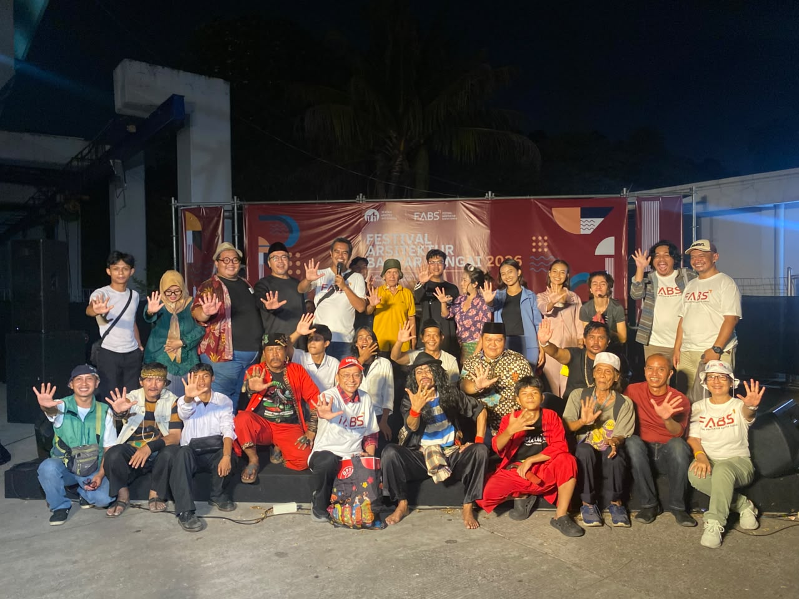
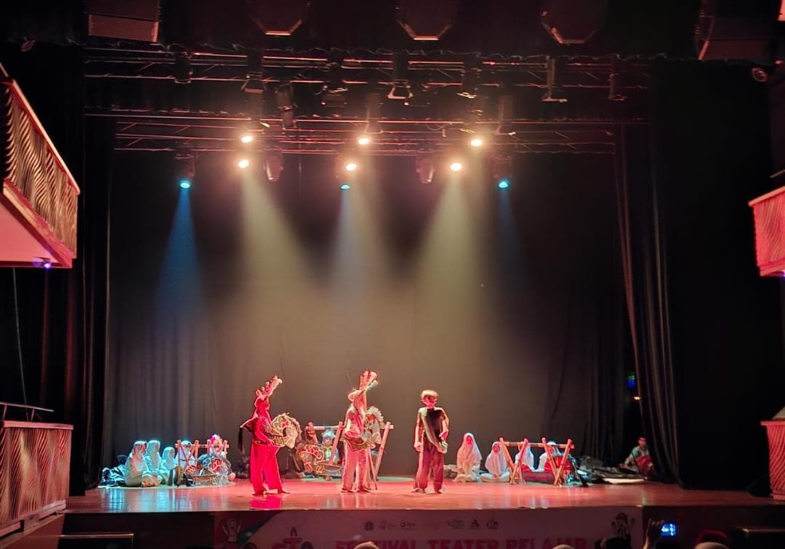
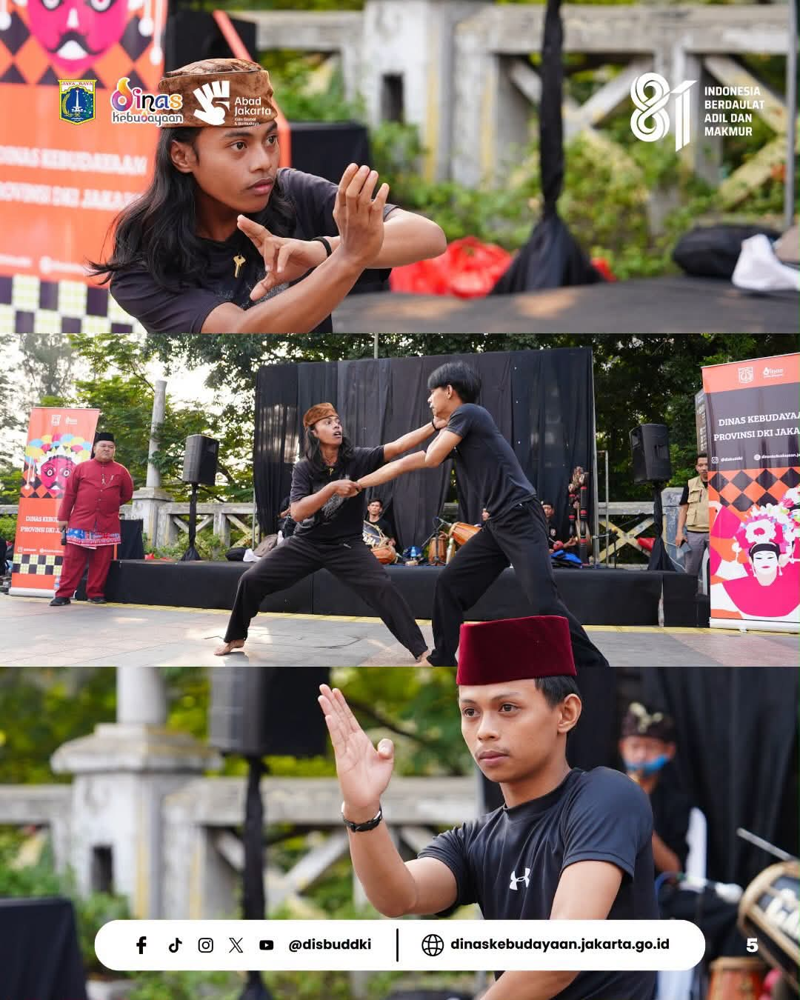
Teater
Tim Produksi Lighting
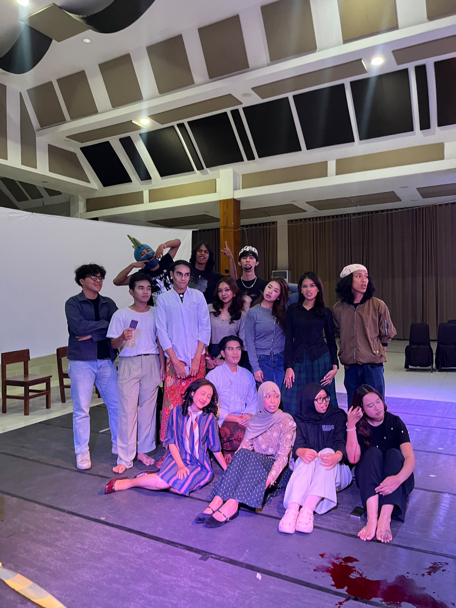
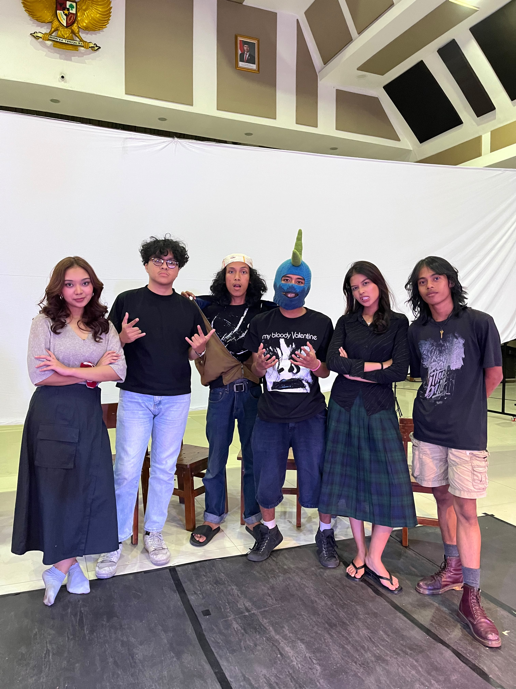
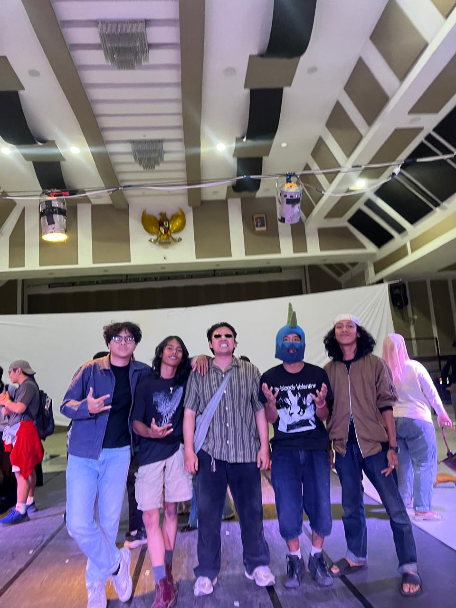
Komunitas Scooter
Anggota
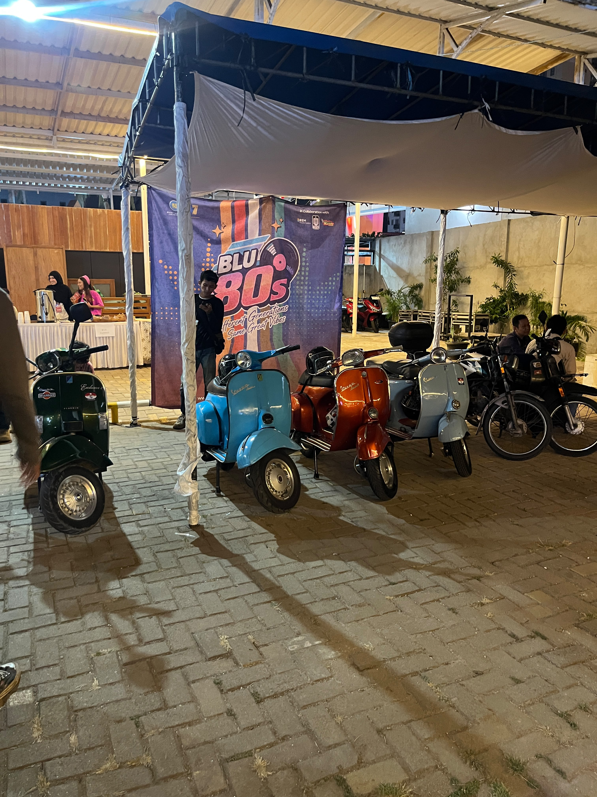
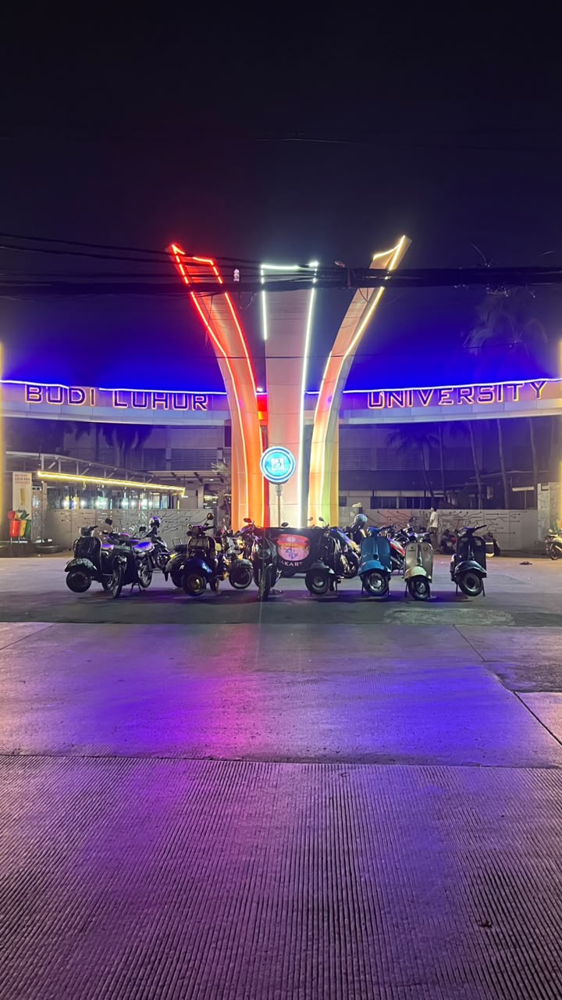
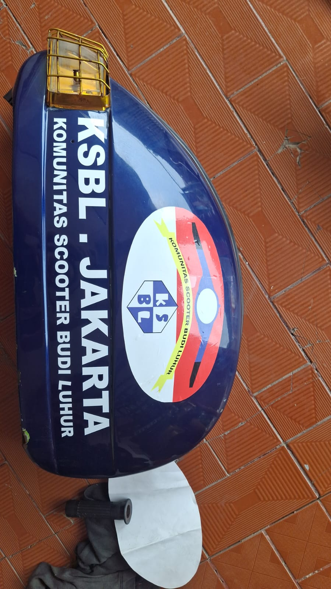

Aplikasi Android untuk manajemen sanggar seni pertunjukan tradisional.
Android MSQL Java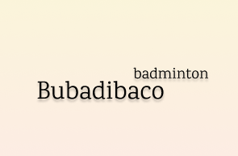
Aplikasi untuk melakukan booking lapangan badminton.
Android Java MYSQL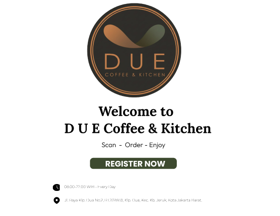
Website untuk menampilkan menu dan layanan kafe DUE Coffe.
HTML Bootstrap JavaScript PHP MSQL